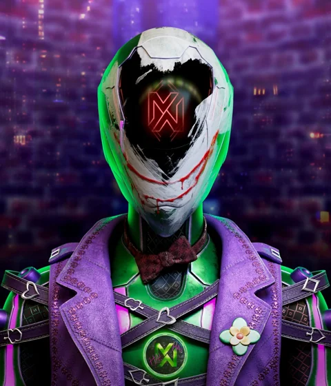
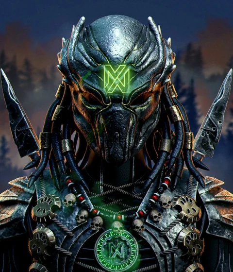
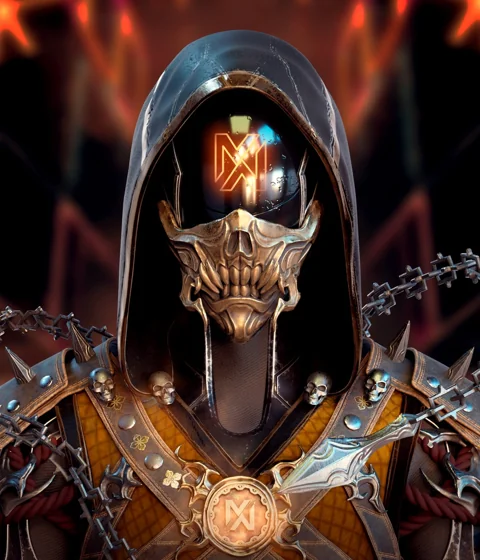
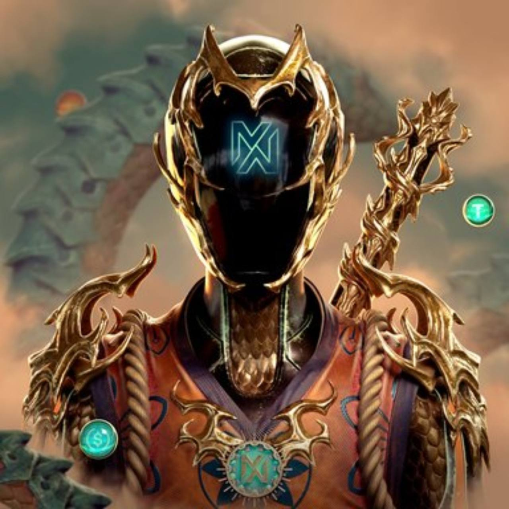
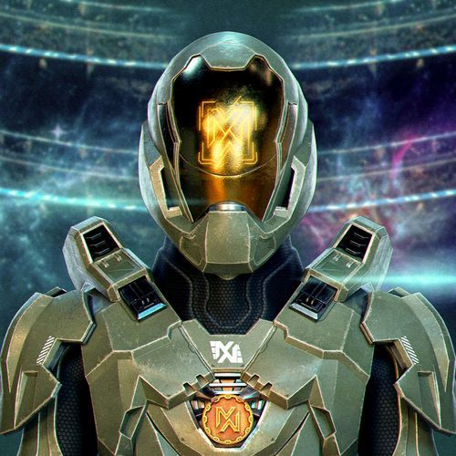
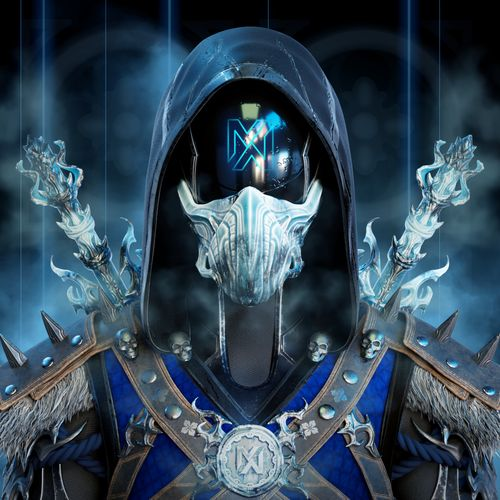
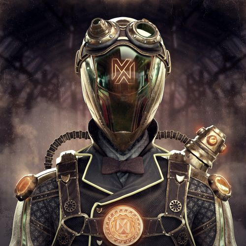

CITY + FRONTIER✦6 STORY JOBS✦13 CREW CONTRACTS✦3 ORIGINAL RADIO STATIONS✦ROAD / WATER / SKY
01 / WELCOME TO CROWN CITY
GOOD CITY. BAD COMPANY.
Neon on the asphalt. Trouble on the radio. Take a look around before it all goes sideways.
AFTER HOURS / Gameplay trailer720p · Original score Download
02 / EVERY DEBT HAS A NAME
STEAL BACK YOUR NAME.
Gold Mage owns the debts. The cameras. The people who collect.
Chaos used to drive for the Palace. Then his name ended up in a file marked dead. Now he’s back, and a convoy crossing town carries the key to the archive that could bring the whole operation down.
Earn your crew’s trust. Buy a blackout. Get inside. Protect the evidence or sell a copy to fund your escape. The city will remember what you chose.
“Every road out of Crown City was paid for by someone who couldn’t afford it.”
GOLD MAGE / CROWN PALACE
DEBT UNSETTLED
03 / NO QUIET NIGHTS
THE STREETS HAVE PLANS.
Nine subway and regional rail stops. The outdoor MetaWin tables and the canal beneath Midtown. Past the airfield, into Pinewatch Forest, Red Mesa and Sierra Crown. The city just got harder to leave.
01 / SOUTHSIDEEverybody’s got somewhere to be.02 / THE STRIPTurn up the radio. Put your foot down.03 / METAWIN TERRACEThe house keeps two sets of books.04 / CROWN CANALAlways know your way out.05 / CROWN AIRFIELDThe clean exit is above the skyline.06 / CROWN TRANSITThe last train is still a way out.07 / PINEWATCHSome things still belong to the forest.
Captured in-game. Illustrated top-down city, live regional trains and local wildlife. Scenes staged for the updated trailer; interface hidden in driving captures.
01
MAKE YOUR OWN HEAT.
Start Free Ride from the title screen. Take a muscle car, bike or boat. Fly the Sparrow helicopter or take the Skylark down Crown Airfield’s runway. Take a 25-chip train ticket across the city and frontier. Tune up on the street and lose the police beyond the skyline. Your story has its own save.
02
KEEP THE CREW CLOSE.
Six story jobs and thirteen repeatable contracts. Run Hunter’s canal ledger, expose the MetaWin books, fly Neural’s mountain relays or take Fire’s desert road to Mask. Find eight contacts in the world. Chief’s witness, Ice’s lost transmission and Steampunk’s station clocks put new names in the Palace archive.
03
STAY OUT LATE.
Watch dusk turn to neon. Pass street conversations, cafés and bus stops. Watch gulls lift off the canal, alley cats prowl and deer scatter into Pinewatch. Five original tracks follow the night: street-level noir, late-night funk, laid-back keys, a faster chase pulse and Last Train Home on the railway.
04 / KNOW WHO YOU RIDE WITH
LOYALTY IS EXPENSIVE.
Inspired by the MetaWinners 1/1 characters. Recast in an original Crown City crime story.

THE DRIVER
CHAOS
Officially dead. Very much a problem.

THE FIXER
HUNTER
A shop to save. A debt paid three times.

THE RACER
FIRE
Earn her trust. Then learn her shortcuts.

THE HOUSE
GOLD MAGE
He owns the city. You have the receipts.

THE WITNESS
CHIEF
He guarded the trains. Then read the cargo lists.

THE SIGNAL
ICE
The valley went quiet. He kept the recording.

THE CLOCKMAKER
STEAMPUNK
Nine missing minutes. One impossible alibi.
Find Gold Mage at the MetaWin terrace, Hunter at the north canal dock, Neural at the airport, Fire at Red Mesa and Mask in Pinewatch. Chief waits at East Port rail station, Ice at Sierra Junction and Steampunk at Midtown Metro. Reporter Vera Vale joins the main story. Explore the MetaWinners collection
05 / NO DOWNLOAD. NO ALIBI.
YOUR CITY. YOUR BAD IDEA.
Open a tab. Start trouble. Pick up where you left off. Free on desktop and mobile, with local saves.
Move with the left stick. Drag the aim/fire button to shoot independently. Use the on-screen buttons to drive, drift and talk to contacts. Walk to a station entrance and tap RAIL to choose a destination; M/R symbols mark stations on the map. Aircraft show UP, DOWN and LAND controls; release the helicopter stick to hover. LAND lines an airplane up with the runway when you enter the approach area.
In Settings, adjust control size, opacity, left-handed layout and Battery Saver. Tap FULLSCREEN in Chrome to fill the display. Landscape gives you more road; portrait works too.
Saving your progress +
Story and Free Ride use separate save slots in this browser on this device. Choose Continue for the story or Free Ride to resume the open city. Clearing site data or using private browsing can remove the save.